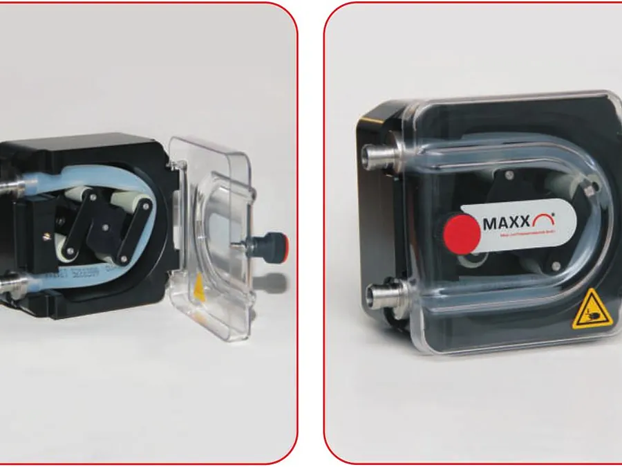

Préleveurs · Fixes
TP5 WPréleveur mural mono-flacon à pompe péristaltique
Le préleveur des applications simples, à fixer au mur. Programmation facile au clavier, prélèvements en fonction du temps ou du débit, très peu d’entretien. Il résiste aux intempéries et s’associe à un réfrigérateur et à tout flacon.
- Volume
- 20 à 350 ml
- Hauteur d’aspiration
- 8,5 m
- Poids
- 10 kg
- Consommation
- 25 VA
Idéal pour
- Applications simples
- Montage mural
- Asservissement au débit
- Extérieur
- Petites stations
LeasingDisponible à l’achat ou en leasing, par mensualités. Comment ça marche
Points forts
Un préleveur fixe économique, sans armoire, pour les points de prélèvement simples.
- Montage muralCoffret compact de 362 × 442 × 222 mm, résistant aux intempéries.
- Pompe péristaltiquePrélèvement visible, précision, maintenance simplifiée.
- Au temps ou au débitAsservissement par impulsions ou entrée 4-20 mA.
- Très peu d’entretienUne conception simple et robuste.
- Programmes sauvegardésJusqu’à 5 ans après une coupure électrique.
- Flacon au choixAssociable à un réfrigérateur et à tout flacon réceptacle.
Principe de mesure
Les galets de la pompe péristaltique écrasent le tuyau en tournant et poussent l’échantillon vers le flacon : le liquide ne touche que le tuyau.
12 programmes utilisateur, prélèvement en fonction du temps, du débit ou d’un événement, et prélèvement manuel à tout moment sans interrompre le programme.
- Vitesse d’aspiration de 1,06 m/s pour 2 m
- Journal de 3 000 événements
- Programmes sauvegardés jusqu’à 5 ans
Applications
Pour les échantillonnages simples d’eaux très diverses.
- Petites stations d’épurationPrélèvements réguliers sans armoire réfrigérée intégrée.
- Rejets industrielsContrôle des effluents en poste fixe.
- Points extérieursCoffret résistant aux intempéries, fixé au mur.
- Prélèvement asserviAu débitmètre, par impulsions ou 4-20 mA.
Caractéristiques
Préleveur mural ; flacon et réfrigérateur au choix.
| Principe | Pompe péristaltique |
|---|---|
| Volume d’échantillon | 20 à 350 ml |
| Hauteur d’aspiration | 8,5 m |
| Vitesse d’aspiration | 1,06 m/s pour 2 m · 0,59 m/s pour 6 m |
| Tuyau | PVC, 5 m, Ø intérieur 9,5 mm, lest inox ; 20 m au maximum |
| Intervalle | 1 min à 99 h 59 min |
| Asservissement | 1 à 9 999 contacts par échantillon |
| Coffret | PE/PC, mural |
|---|---|
| Commande | Écran LCD graphique, 12 programmes |
| Entrées | 2 analogiques 0/4-20 mA, 8 TOR |
| Sorties | 8 TOR dont 1 alarme défaut |
| Interface | Mini-USB, RS422, RS232 ; Ethernet en option |
| Alimentation | 230 ou 115 Vac, 25 VA |
| Dimensions | 362 × 442 × 222 mm, 10 kg |
| Norme | CE, ISO 5667-2/3-10 |
Téléchargements
Questions fréquentes
Les questions que nous posent le plus souvent les exploitants et les bureaux d’études.
Le TP5 W est-il réfrigéré ?
Non, c’est un coffret mural. Il s’associe à un réfrigérateur et à tout flacon réceptacle pour conserver les échantillons.
Peut-il être installé à l’extérieur ?
Oui, il résiste aux intempéries et se fixe au mur.
Comment l’asservir au débit ?
Par impulsions d’un débitmètre (1 à 9 999 contacts par échantillon) ou par l’entrée 4-20 mA.
Les programmes sont-ils perdus en cas de coupure ?
Non, ils sont sauvegardés jusqu’à 5 ans après une coupure électrique.